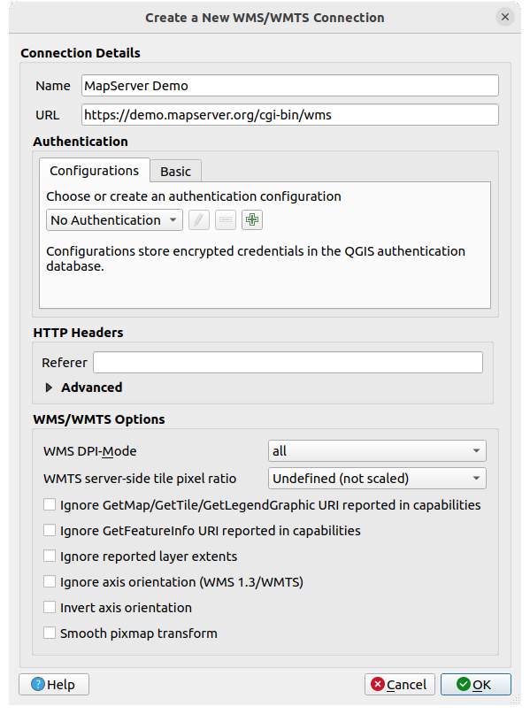

22. OGC / ISO protocol များဖြင့် အလုပ်လုပ်ခြင်း
Open Geospatial Consortium (OGC) ဆိုသည်မှာ ကမ္ဘာ့အနှံ့အပြားမှ စီးပွားရေးလုပ်ငန်းရှင်များ၊ အစိုးရအဖွဲ့အစည်းများ၊ အစိုးရမဟုတ်သော အဖွဲ့အစည်းများ နှင့် သုတေသန အဖွဲ့အစည်းပေါင်း ၃၀၀ ကျော်တို့ဖြင့် ပူးပေါင်းဖွဲ့စည်းထားသော နိုင်ငံတကာ အဖွဲ့အစည်းတစ်ခုဖြစ်ပါသည်။ ၎င်း၏အဖွဲ့ဝင်များသည် ပထဝီဝင်တည်နေရာဆိုင်ရာ (geospatial) အကြောင်းအရာနှင့် ဝန်ဆောင်မှုများ၊ GIS data များစနစ်တကျလုပ်ဆောင်ခြင်းနှင့် ဖလှယ်ခြင်းတို့အတွက် စံချိန်စံညွှန်းများကို ရေးဆွဲအကောင်အထည်ဖော် ဆောင်ရွက်ပေးပါသည်။
Geographic feature (ပထဝီဝင်ဆိုင်ရာအရာဝတ္ထု) များအတွက် အခြေခံ data model တစ်ခုကို ဖော်ပြခြင်း၊ GIS အပါအဝင် ပူးပေါင်းလုပ်ဆောင်နိုင်သော တည်နေရာနှင့် ပထဝီဝင်တည်နေရာဆိုင်ရာ နည်းပညာများအတွက် အသေးစိတ်လိုအပ်ချက်များကို လုပ်ဆောင်ရန်အတွက် များပြားလာသော specification များကို OGC မှ ဖန်တီးပေးပါသည်။ https://www.ogc.org/ တွင်ပိုမိုလေ့လာနိုင်ပါသည်။
QGIS အတွင်း အသုံးပြုနိုင်သော အရေးကြီးသည့် OGC specificaion များမှာ -
WMS — Web Map Service (WMS/WMTS Client)
WMTS — Web Map Tile Service (WMS/WMTS Client)
WFS — Web Feature Service (WFS and WFS-T Client)
WFS-T — Web Feature Service - Transactional (WFS and WFS-T Client)
WCS — Web Coverage Service (WCS Client)
WPS — Web Processing Service
CSW — Catalog Service for the Web
SFS — Simple Features for SQL (PostGIS Layer များ)
GML — Geography Markup Language
အမျိုးမျိုးသော GIS အကောင်အထည်ဖော်ခြင်းနှင့် data သိမ်းဆည်းခြင်းများအကြားရှိ geospatial data များဖလှယ်ခြင်း ပြုလုပ်ရန်အတွက် OGC service များကို ပိုမိုအသုံးပြုလာကြပါသည်။ SFS ကို အသုံးပြုပြီး (PostgreSQL/ PostGIS data provider ကနေတစ်ဆင့်၊ PostGIS Layer များ section တွင်ကြည့်ရှုပါ) အထက်တွင်ဖော်ပြခဲ့သော specification များကို QGIS က client အဖြစ် လုပ်ဆောင်နိုင်ပါသည်။
QGIS Server ၊ UMN MapServer သို့မဟုတ် GeoServer တို့ပါသော webserver ကိုအသုံးပြုသော WMS၊ WMTS၊ WFS၊ WFS-T နှင့် WCS protocols မှတဆင့် မြေပုံများနှင့် data ကို မျှဝေပေးနိုင်ပါသည်။
22.1. WMS/WMTS Client
22.1.1. WMS ထောက်ပံ့မှုအကြောင်း (Overview of WMS Support)
ယခုလက်ရှိတွင် QGIS သည် WMS 1.1 ၊ 1.1.1 နှင့် 1.3 server များကို နားလည်နိုင်၊ ဖတ်နိုင်သော WMS client တစ်ခုအဖြစ်လုပ်ဆောင်ပါသည်။ အထူးသဖြင့် အများပြည်သူအသုံးပြုနိုင်သော DEMIS ကဲ့သို့ server များကို ဆန့်ကျင်ပြီး စမ်းသပ်ထားပါသည်။
WMS server သည် သတ်မှတ်ထားသော အကျယ်အဝန်း၊ layer များ၊ symbolization style (သင်္ကေတဆိုင်ရာပုံစံ) နှင့် အလင်းဖောက်နှုန်း (transparency) များဖြင့် raster map တစ်ခုအတွက် client (ဥပမာ- QGIS) မှ စေခိုင်းချက်အတိုင်း လုပ်ဆောင်ပေးပါသည်။ ထို့နောက် WMS server သည် ၎င်း၏ local data အရင်းအမြစ်များကို raster map တစ်ခုအဖြစ်ဖန်တီးပေးပြီး client ဆီသို့ raster format အဖြစ် ပြန်ပို့ပေးပါသည်။ QGIS မှာဆိုလျှင် ဤ format သည် JPEG သို့မဟုတ် PNG ဖြစ်ပါလိမ့်မည်။
WMS သည် ယေဘုယျအားဖြင့် အပြည့်အဝကောင်းမွန် web service တစ်ခုဆိုတာထက် REST (Representational State Transfer) service တစ်ခုသာဖြစ်ပါသည်။ QGIS မှဖန်တီးလိုက်သော URLs ကိုယူပြီး QGIS အတွင်းအသုံးပြုသည့် တူညီသောဓာတ်ပုံများကို ရယူရန် web browser ထဲတွင် ထို URLs ကို အသုံးပြုနိုင်ပါသည်။ ဈေးကွက်ထဲတွင် WMS server အမျိုးမျိုးရှိပြီး တစ်ခုချင်းစီတွင် ကိုယ်ပိုင် WMS standard (စံနှုန်း) များ ရှိကြသဖြင့် troubleshooting (ပြဿနာဖြေရှင်းခြင်း) အတွက်အသုံးဝင်ပါသည်။
WMS server ကိုအသုံးပြုခွင့်ရနိုင်မည့် URL ကိုသိနေသမျှ၊ ၎င်း server ကို အသုံးပြုနိုင်သော ချိတ်ဆက်မှုရှိနေသမျှ နှင့် server သည် HTTP ကို data ကူးပြောင်းမှုယန္တရားအဖြစ် နားလည်နေသမျှ WMS layer များကို ရိုးရှင်းစွာ ထည့်သွင်းနိုင်ပါသည်။
ထို့အပြင် GetCapabilities request မလုပ်မချင်း ၂၄ နာရီအတွင်းမှာ QGIS သည် WMS တုန့်ပြန်မှုများ (ဓာတ်ပုံကိုဆိုလိုသည်) ကို ယာယီသိမ်းထား (cache) ပေးပါသည်။ WMS server capability များကိုပြန်လည်ရယူရန် WMS/WMTS dialog ထဲရှိ Connect ခလုတ်ကို နှိပ်သည့်အခါတိုင်း GetCapabilities request ကိုလုပ်ဆောင်ပါသည်။ ၎င်းသည် Project အလုပ်လုပ်ချိန်သက်သာမှု အကောင်းဆုံးဖြစ်အောင် အလိုအလျှောက်လုပ်ဆောင်ပေးသော feature တစ်ခုဖြစ်ပါသည်။ Projet ကို WMS layer နှင့်သိမ်းထားသောအခါ ၂၄ နာရီမကျော်သေးလျှင် နောက်တစ်ခါ project ကို ပြန်ဖွင့်သောအခါ သက်ဆိုင်သော WMS tile များကို ယာယီသိမ်းဆည်းပေးထားသည့် cache များမှ ခေါ်ယူအသုံးပြုမည်ဖြစ်ပါသည်။
22.1.2. WMTS ထောက်ပံ့မှုအကြောင်း (Overview of WMTS Support)
QGIS သည် WMTS client အဖြစ်လည်းလုပ်ဆောင်နိုင်ပါသည်။ WMTS သည် Geospatial data ၏ tile set များကို ဖြန့်ဝေခြင်းအတွက် OGC standard တစ်ခုဖြစ်ပါသည်။ WMTS ဖြင့် tile set များကို ကြိုတင် ဖန်တီးထားပြီး client သည် tile များ၏ ကူးပြောင်းခြင်းကိုသာ တောင်းဆိုပြီး သူတို့၏ ထွက်လာသော ရလာဒ်ကို မတောင်းဆိုတာကြောင့် ဤနည်းလမ်းသည် data များကို ဖြန့်ဝေရာတွင် WMS ထက်ပိုမိုမြန်ဆန်ပြီး ပိုမိုထိရောက်ပါသည်။ WMS ရဲ့ တောင်းဆိုမှုထဲတွင် data များဖန်တီးခြင်းနှင့် ကူးပြောင်းခြင်း ၂ မျိုးလုံးပါဝင်ပါသည်။ Tile ပြုလုပ်ထားသော geospatial data ကို ကြည့်ရန်အတွက် non-OGC standard ရဲ့ အသိများသော ဥပမာမှာ Google Maps ဖြစ်ပါသည်။
အသုံးပြုသူက အသုံးပြုလိုသော စကေးနှင့် နီးစပ်သော စကေးအမျိုးမျိုးတွင် data များပြသရန်အတွက် WMTS tile set များကို စကေး level အမျိုးမျိုးတွင် ဖန်တီးထားပြီး GIS client မှ ၎င်းတို့ကို request (တောင်းဆို) လုပ်ပြီး အသုံးပြုနိုင်ပါသည်။
အောက်ပါပုံသည် tile set များ၏ သဘောတရားကို သရုပ်ဖော်ပေးပါသည်-

Fig. 22.1 WMTS tile set များ၏ သဘောတရား
QGIS တွင်အသုံးပြုနိုင်သော WMTS interface နှစ်မျိုးမှာ Key-Value-Pairs (KVP) နှင့် RESTful တို့ဖြစ်ပါသည်။ ထို interface နှစ်မျိုးသည် ကွဲပြားပြီး QGIS တွင် သီးခြားစီသတ်မှတ်ပေးရန် လိုအပ်ပါသည်။
WMTS KVP service ကိုအသုံးပြုရန်အတွက် QGIS အသုံးပြုသူသည် WMS/WMTS interface ကိုဖွင့်ပြီး WMTS tile service ၏ URL ထဲတွင် အောက်ပါ စာသားများထည့်ပေးရပါမည်-
"?SERVICE=WMTS&REQUEST=GetCapabilities"ဤလိပ်စာအမျိုးအစား၏ ဥပမာတစ်ခုမှာ -
https://opencache.statkart.no/gatekeeper/gk/gk.open_wmts?service=WMTS&request=GetCapabilities
စမ်းသပ်မှုအတွက် ဤ WMTS ထဲရှိ topo2 layer သည် ကောင်းမွန်စွာ အလုပ်လုပ်ပါသည်။ ဒီစာသားများကို ပေါင်းထည့်ခြင်းသည် WMS service အစား WMTS web service ကို အသုံးပြုသည်ဟု ညွှန်ပြပါသည်။
RESTful WMTS service သည် တိုက်ရိုက်ဖြစ်သော (straightforward) URL ဖြစ်သည့် တခြားပုံစံကို အသုံးပြုပါသည်။ OGC မှ ထောက်ခံပေးထားသော format မှာ-
{WMTSBaseURL}/1.0.0/WMTSCapabilities.xml
RESTful လိပ်စာဖြစ်ကြောင်း သတိထားမိရန်အတွက် ဤ format က လုပ်ဆောင်ပေးပါသည်။ Form ၏ URL field ထဲရှိ WMS setup ထဲတွင် လိပ်စာထည့်လိုက်ခြင်းဖြင့် QGIS ထဲတွင် RESTful WMTS ကို အသုံးပြုနိုင်ပါသည်။ Austrian basemap ရဲ့ ကိစ္စအတွက် လိပ်စာအမျိုးအစား ဥပမာမှာ -
https://maps.wien.gv.at/basemap/1.0.0/WMTSCapabilities.xml
Note
WMS-C ဟုခေါ်သော တချို့ service အဟောင်းများကိုလည်း ရှာဖွေနိုင်ပါသည်။ ၎င်း service များသည် WMTS နှင့်အတော်ဆင်တူပါသည် (ရည်ရွယ်ချက်တူပြီး လုပ်ဆောင်ပုံအနည်းငယ်ကွဲလွဲခြင်းကို ဆိုလိုပါသည်)။ WMTS service ကိုစီမံခန့်ခွဲသည့် နည်းလမ်းအတိုင်း ၎င်းတို့ကို စီမံခန့်ခွဲနိုင်ပါသည်။ URL ၏ အဆုံးသတ်တွင် ?tiled=true ကိုသာပေါင်းထည့်ပေးရန်လိုအပ်ပါသည်။ ဤ specification အတွက် အသေးစိတ်ကို https://wiki.osgeo.org/wiki/Tile_Map_Service_Specification တွင်ကြည့်ရှုပါ။
WMTS ကို ဖတ်ရှုသောအခါ WMS-C ကိုလည်း မကြာခဏ ထည့်စဉ်းစားနိုင်ပါသည်။
22.1.3. WMS/WMTS Server ရွေးခြင်း (Selecting WMS/WMTS Servers)
QGIS ထဲတွင် WMS/WMTS feature ကို ပထမဆုံးအသုံးပြုသောအခါ သတ်မှတ်ထားသော server များမရှိသေးပါ။
ထို့ကြောင့် သင်ရည်ရွယ်ထားသော server ကို ချိတ်ဆက်မှုများ ဖန်တီးရန်လိုအပ်ပါသည်-
Data Source Manager dialog ၏
 WMS/WMTS tab ကို သွားပါ။ အောက်ပါနည်းလမ်းတစ်နည်းနည်းဖြင့် လုပ်ဆောင်ပါ-
WMS/WMTS tab ကို သွားပါ။ အောက်ပါနည်းလမ်းတစ်နည်းနည်းဖြင့် လုပ်ဆောင်ပါ- Open Data Source Manager ခလုတ်ကိုနှိပ်ပြီး (သို့မဟုတ် Ctrl+L ကိုနှိပ်ခြင်း) tab ကိုအသုံးပြုနိုင်စေရန် ဖွင့်ခြင်း
Open Data Source Manager ခလုတ်ကိုနှိပ်ပြီး (သို့မဟုတ် Ctrl+L ကိုနှိပ်ခြင်း) tab ကိုအသုံးပြုနိုင်စေရန် ဖွင့်ခြင်းManage Layers toolbar ပေါ်ရှိ
 Add WMS layer ခလုတ်ကိုနှိပ်ခြင်း
Add WMS layer ခလုတ်ကိုနှိပ်ခြင်းသို့မဟုတ်
menu ကို ရွေးချယ်ခြင်း
Layers tab မှ New ကိုနှိပ်ပါ။ Create a New WMS/WMTS Connection… dialog ပေါ်လာပါမည်။
Tip
Browser panel အတွင်းမှ
WMS/WMTS entry ကို right-click နှိပ်ပြီး New Connection… ကို ရွေးချယ်ခြင်းသည်လည်း Create a New WMS/WMTS Connection… dialog ကိုလည်းဖွင့်စေမည်ဖြစ်ပါသည်။အောက်မှာစာရင်းပြုစုထားတဲ့အတိုင်း ချိတ်ဆက်လိုသော WMS server ကို ချိတ်ဆက်ရန် parameter များထည့်သွင်းပါ–
 Fig. 22.2 WMS server တစ်ခုကို ချိတ်ဆက်မှု ဖန်တီးခြင်း
Name - ချိတ်ဆက်မှုအတွက် နာမည်တစ်ခု ဖြစ်ပါသည်။ အခြား WMS server များနှင့် မရောထွေးစေရန် ဤနာမည်ကို Server ချိတ်ဆက်မှု drop-down box တွင် အသုံးပြုမည်ဖြစ်ပါသည်။
URL - Data များထောက်ပံ့ပေးနေသော server ၏ URL ဖြစ်ပါသည်။ ၎င်းသည် ဖြေရှင်းနိုင်သော လက်ခံနာမည် (host name) တစ်ခု ဖြစ်ရပါမည်။ Telnet တစ်ခုကိုဖွင့်ရန် သို့မဟုတ် လက်ခံ (host) တစ်ခုကို ping လုပ်ရန် အတွက် အသုံးပြုသော format နှင့် အတူတူဖြစ်ရပါမည် (အခြေခံ URL ကိုသာဆိုလိုပါသည်)။ ဥပမာ URL ထဲတွင်
request=GetCapabilitiesသို့မဟုတ်version=1.0.0ကဲ့သို့ fragment (အပိုင်းအစ) များမရှိသင့်ပါ။Authentication (စစ်မှန်ကြောင်းပြသခြင်း) (Optional - ရွေးချယ်ခွင့်ရှိသည်) - stored configuration (သိမ်းဆည်းထားသော ပြင်ဆင်သတ်မှတ်မှုများ) တစ်ခု သို့မဟုတ် Username (အသုံးပြုသူနာမည်) နှင့် Password (စကားဝှက်) ဖြင့် basic authentication (စစ်မှန်ကြောင်းပြသခြင်း) ကို အသုံးပြုခြင်း။
Warning
Authentication tab တွင် username နှင့် password ကိုထည့်ထားခြင်းသည် ချိတ်ဆက်မှုဆိုင်ရာ ပြင်ဆင်သတ်မှတ်ခြင်းတွင် အကာအကွယ်မရှိသော အထောက်အထားများ (credentials) ကို ဆက်လက်ထားရှိမည်ဖြစ်သည်။ Project file ကို တစ်ယောက်ယောက်ကို မျှဝေသောအခါ ထို အထောက်အထား (credentials) များကို မြင်တွေ့ရပါမည်။ ထို့ကြောင့် credential များကို Configurations tab တွင်သိမ်းဆည်းမည့်အစား Authentication configuration တွင်သိမ်းဆည်းသင့်ပါသည်။ authentication_index တွင်အသေးစိတ်ကြည့်ရှုပါ။
HTTP Referer (ရည်ညွှန်းပေးသည့်အရာ)
WMS DPI-Mode - ရွေးချယ်စရာများမှာ all၊ off၊ QGIS၊ UMN နှင့် GeoServer တို့ဖြစ်ကြပါသည်။
WMTS server-side tile pixel ratio - WMTS layer များကို ပုံဖော်ပြသသောအခါ အသုံးပြုနေသော device ရဲ့ မျက်နှာပြင် DPI (resolution) ပေါ်မူတည်ပြီး စကေး အကြီးအသေး ကို ချိန်ညှိနိုင်ပါသည်။ ရွေးချယ်စရာများမှာ- Undefined (not scaled)၊ Standard (96 DPI) နှင့် High (192 DPI) တို့ဖြစ်ပါသည်။
 Ignore GetMap/GetTile/GetLegendGraphic URI reported in capabilities - အမှန်ခြစ် ခြစ်ထားလျှင် အထက်က URL field ထဲရှိ ပေးထားသော URI ကို အသုံးပြုပါမည်။
Ignore GetMap/GetTile/GetLegendGraphic URI reported in capabilities - အမှန်ခြစ် ခြစ်ထားလျှင် အထက်က URL field ထဲရှိ ပေးထားသော URI ကို အသုံးပြုပါမည်။- Ignore GetFeatureInfo URI reported in capabilities - အမှတ်ခြစ် ခြစ်ထားလျှင် အထက်က URL field ထဲရှိ ပေးထားသော URI ကို အသုံးပြုပါမည်။
- Ignore reported layer extents - Raster layer များမှ report လုပ်သော အကျယ်အဝန်း (extent) သည် ပုံဖော်ပြသနိုင်မည့် အမှန်တကယ် ဧရိယာထက် ပိုသေးငယ်သောကြောင့် (data အကျယ်အဝန်းထက် နေရာပိုယူသော symbology ဖြင့် WMS server များအတွက် သိသာပါသည်) raster layer များကို ၎င်းတို့၏ report လုပ်သော အကျယ်အဝန်းဖြင့် ဖြတ်ထုတ်ခြင်းကို ရှောင်ရှားရန် ဤ option ကို အမှန်ခြစ်ပါ။ ၎င်း layer များ၏ အနားသတ်မျဉ်းများပေါ်တွင် သင်္ကေတအပြတ်များ ဖြစ်လာမည်ဖြစ်သည်။
- Ignore axis orientation (WMS 1.3/WMTS) (ဝင်ရိုး၏မျက်နှာမူရာကိုလျစ်လျူရှုခြင်း)
- Invert axis orientation (ဝင်ရိုး၏မျက်နှာမူရာကို ပြောင်းပြန်လှည့်ခြင်း)
- Smooth pixmap transformation (ချောမွေ့သော pixmap ကူးပြောင်းခြင်း)
OK ` ကို နှိပ်ပါ။
WMS/WMTS server ချိတ်ဆက်မှုအသစ်တစ်ခု ဖန်တီးပြီးသောအခါ နောင်တွင်အသုံးပြုမည့် QGIS session များအတွက် ၎င်းကို သိမ်းဆည်းထားပေးပါသည်။
Internet မှ WMS service များကို လက်ခံအသုံးပြုနိုင်ရန်အတွက် proxy server တစ်ခုတပ်ဆင်ရန် လိုအပ်လျှင် proxy server ကိုရွေးချယ်တပ်ဆင်နိုင်ပါသည်။ ကိုရွေးချယ်ပါ၊ ထို့နောက် Network tab ကို နှိပ်ပါ။ ထိုထဲတွင် proxy setting များ ထည့်သွင်းနိုင်ပြီး  Use proxy for web access setting ကို အမှန်ခြစ်ပေးပြီး အသုံးပြုနိုင်အောင် ဖွင့်ပေးနိုင်ပါသည်။ Proxy type
Use proxy for web access setting ကို အမှန်ခြစ်ပေးပြီး အသုံးပြုနိုင်အောင် ဖွင့်ပေးနိုင်ပါသည်။ Proxy type  drop-down menu မှ မှန်ကန်သော proxy အမျိုးအစားကို ရွေးချယ်ရန် လိုအပ်ပါသည်။
drop-down menu မှ မှန်ကန်သော proxy အမျိုးအစားကို ရွေးချယ်ရန် လိုအပ်ပါသည်။
22.1.4. WMS/WMTS Layer များကို ထည့်သွင်းအသုံးပြုခြင်း (Loading WMS/WMTS Layers)
Parameter များထည့်သွင်းပြီးနောက် ရွေးချယ်ထားသော server ၏ လုပ်နိုင်စွမ်း (capability) များကို ပြန်လည်ရယူရန် Connect ခလုတ်ကိုနှိပ်ပါ။ ၎င်းလုပ်ငန်းစဉ်တွင် image encoding၊ layers၊ layer styles နှင့် projections များပါဝင်ပါသည်။ ဒီလုပ်ငန်းသည် ချိတ်ဆက်လုပ်ဆောင်ရခြင်း ဖြစ်သောကြောင့် တန့်ပြန်မှု အမြန်နှုန်းသည် WMS server ကို ချိတ်ဆက်ထားသော network ၏အရည်အသွေးပေါ်မူတည်ပါသည်။ WMS server မှ data များကို download ရယူသောအခါ download ပြီးစီးမှုအခြေအနေကို အဓိက QGIS dialog ၏ ဘယ်ဘက်အောက်ခြေတွင် ကြည့်ရှုနိုင်ပါသည်။
ဒီအဆင့်တွင် screen သည် WMS server မှတုန့်ပြန်မှုကို ပြသသော Fig. 22.3 နှင့် တူနေသင့်ပါသည်။
Fig. 22.3 အသုံးပြုနိုင်သော layer များကို စစ်ထုတ်မှုဖြင့် WMS server တစ်ခုပေါင်းထည့်ခြင်း Dialog
Dialog ၏ Layers tab အပေါ်ပိုင်းတွင် server မှလုပ်ဆောင်ပေးသော သက်ဆိုင်သော ဓာတ်ပုံ style များနှင့် ထည့်မြှုပ်ထားသည့် layer အစုအဖွဲ့များပါဝင်သော အဆင့်ဆင့်ပြသသည့် ဖွဲ့စည်းမှုများကို တွေ့ရပါမည်။ Item တစ်ခုချင်းဆီကို အောက်ပါတို့ဖြင့် သရုပ်ခွဲနိုင်ပါသည်-
ID (အမှတ်နံပါတ်) တစ်ခု
Name (အမည်) တစ်ခု
Title (ခေါင်းစဉ်) တစ်ခု
နှင့် Abstract (အကျဉ်းချုပ်) တစ်ခု
ညာဘက်အပေါ်ထောင့်မှ  widget ကိုအသုံးပြုပြီး စာရင်းကို စစ်ထုတ်နိုင်ပါသည်။
widget ကိုအသုံးပြုပြီး စာရင်းကို စစ်ထုတ်နိုင်ပါသည်။
Image Encoding (ဓာတ်ပုံ code လုပ်ခြင်း)
Image encoding section သည် client နှင့် server နှစ်မျိုးလုံးက အလုပ်လုပ်ပေးနိင်သော format များကို စာရင်းပြုစုပေးပါသည်။ ဓာတ်ပုံတိကျမှု လိုအပ်ချက်ပေါ်မူတည်ပြီး သင့်တော်သော တစ်ခုကို ရွေးချယ်ပါ။
Tip
Image Encoding
WMS server သည် JPEG သို့မဟုတ် PNG image encoding ကို ပေးပါသည်။ JEPG သည် lossy compression အမျိုးအစားဖြစ်ပြီး PNG သည် raw raster data များကိုသာ ထုတ်ပေးပါသည်။
WMS data သည် ဓာတ်ပုံကို သဘာဝအတိုင်းကြည့်ကောင်းပြီး ဓာတ်ပုံ၏တချို့သော အရည်အသွေးများဆုံးရှုံးမှုသည် ကိုယ့်အတွက်အရေးမကြီးလျှင် JPEG ကိုအသုံးပြုပါ။ ဒီနည်းဟာ PNG နှင့် နှိုင်းယှဉ်လျှင် data ရွှေ့ပြောင်းမှု လိုအပ်ချက်ကို ၅ ဆ လျော့ချပေးပါသည်။
မူရင်း data အတိုင်းအပြည့်အဝပြန်လည်အသုံးချလိုပြီး data ရွှေ့ပြောင်းမှု လိုအပ်ချက်များ မြင့်မားခြင်းသည် ကိုယ့်အတွက် အရေးမကြီးလျှင် PNG ကိုအသုံးပြုပါ။
Options (ရွေးချယ်စရာများ)
Dialog ၏ ရွေးချယ်စရာနေရာတွင် WMS ရဲ့ request များကို ပြင်ဆင်သတ်မှတ်ရန် နည်းလမ်းများကို ဖော်ပြပေးပါသည်။ အောက်ပါအတိုင်း သတ်မှတ်နိုင်ပါသည်-
Tile size (Tile ကွက် အရွယ်အစား) - WMG requet ကို request အများကြီးအဖြစ် ပိုင်းခြားရန်အတွက် Tile အရွယ်အစား (ဥပမာ- 256x256) ကို သတ်မှတ်လိုလျှင် Tile size ကို သုံးပါ။
Request step size - Tile ၏ border (အနားသတ်များ) တွင် အညွှန်းများ ပြတ်တောက်နေမှုကို လျော့ချလိုလျှင် step size (အဆင့်အရွယ်အစား) ကို တိုးလိုက်ခြင်းဖြင့် request များ ပိုကြီးစေခြင်း၊ tile အရေအတွက်နည်းသွားစေခြင်း နှင့် border အရေအတွက်နည်းသွားစေခြင်းတို့ကို ဖြစ်စေပါသည်။ Default တန်ဖိုးမှာ 2000 ဖြစ်ပါသည်။
Server မှ Maximum number of GetFeatureInfo results (GetFeatureInfo results ၏ အများဆုံးအရေအတွက်)
WMS server ၏ လုပ်ဆောင်နိုင်စွမ်းပေါ်မူတည်ပြီး WMS layer တစ်ခုချင်းစီကို CRS များစွာထဲတွင် ဖော်ပြနိုင်ပါသည်။ စာရင်းထဲမှ WMS တစ်ခုကိုရွေးချယ်လျှင် web server က ထောက်ပံ့ပေးထားသော မူရင်း projection နှင့် field တစ်ခုပေါ်လာပါမည်။ WMS ၏ မူရင်း projection ကို WMS server တွင်အသုံးပြုလို့ရသော တခြား CRS နှင့် အစားထိုးရန်အတွက်
 Select CRS widget ကိုနှိပ်ပါ။
Select CRS widget ကိုနှိပ်ပါ။Fig. 10.4 ထဲတွင် ပြထားသည်နှင့် ဆင်တူသော dialog တစ်ခုပေါ်လာပါမည်။ Dialog ၏ WMS version နှင့် အဓိကခြားနားချက်မှာ WMS server တွင် အသုံးပြုလို့ရသော CRS များကိုသာ ပြသပေးပါသည်။
WMS server တွင် ဤ feature ကိုအသုံးပြုနိုင်လျှင်
Use contextual WMS Legend ကို စတင်အသုံးပြုလို့ရနိုင်ပြီ ဖြစ်ပါသည်။ ထို့နောက် မြေပုံ၏ လက်ရှိမြင်ကွင်းတွင်ပေါ်နေသော သက်ဆိုင်ရာရည်ညွှန်းချက်များကိုသာ ဖော်ပြပေးမည်ဖြစ်ပြီး လက်ရှိမြေပုံရဲ့ မြင်ကွင်းတွင်မမြင်ရသော အချက်အလက်များကို ရည်ညွှန်းချက်အဖြစ်ဖော်ပြမပေးပါ။
Dialog ၏ အောက်ခြေတွင် Layer name (Layer နာမည်) text field (စာသား column) သည် ရွေးချယ်ထားသာ item များ၏ Title (ခေါင်းစဉ်) ကို ပြသပေးပါသည်။ အမည်ကို စိတ်ကြိုက်ပြင်ဆင်နိုင်ပါသည်။ Add ခလုတ်ကို နှိပ်ပြီး QGIS ထဲတွင် layer များကို ထည့်ပြီးသောအခါ ထိုအမည် သည် Layers panel ထဲတွင် ပေါ်နေမည်ဖြစ်သည်။
Layer အများအပြားကို တစ်ပြိုင်နက်ရွေးချယ်ထားနိုင်ပါသည်၊ သို့သော် layer တစ်ခုတွင် ဓာတ်ပုံတစ်ပုံကိုပဲ style ပြင်ဆင်ပေးပါသည်။ Layer အများအပြားကိုရွေးချယ်ထားသောအခါ WMS server ထဲမှာ ၎င်းတို့ကိုပေါင်းလိုက်ပြီး layer တစ်ခုတည်းအဖြစ် QGIS ဆီသို့ ပို့ဆောင်ပေးပါသည်။ အလိုအလျှောက်ဖန်တီးပေးသောနာမည်မှာ မူရင်းခေါင်းစဉ်၏ စာရင်းကို slash (/) ဖြင့်ပိုင်းခြားထားပါသည်။ Load as separate layers (သီးခြား layer များအဖြစ် ထည့်သွင်းရန်) ကို ရွေးချယ်နိုင်ပါသည်။
Layer Order (Layer အစီအစဉ်)
Layer Order tab သည် လက်ရှိချိတ်ဆက်ထားသော WMS server မှ ရွေးချယ်ထားသော layer များကို စာရင်းပြုစုပေးပါသည်။
Server တစ်ခုမှ ပုံဖော်ပြသပေးထားသော WMS layer များကို Layers tab ထဲတွင် စာရင်းပြုစုထားသော အစီအစဉ်အတိုင်း စီစဉ်ပါသည်။ အစီအစဉ် ကို ပြောင်းလဲလိုလျှင် Layer Order tab ၏ Up နှင့် Down ခလုတ်များကို အသုံးပြုနိုင်ပါသည်။
Transparency (အလင်းဖောက်နှုန်း)
အသုံးပြုလို့ရသည့်နေရာများတွင် အမြဲတမ်းပွင့်နေစေရန် Layer Properties မှ Global transparency setting ကို အသေဖန်တီးထားပါသည်။
22.1.5. Tile အစုများ (Tilesets)
WMTS (ယာယီသိမ်းဆည်းထားပေးသော WMS) service များကိုအသုံးပြုသောအခါ server မှပေးထားသော Tilesets tab မှတဆင့် ရှာဖွေနိုင်ပါသည်။ အရွယ်အစား၊ format များနှင့် အသုံးပြုနိုင်သော CRS များကဲ့သို့ တခြားသော အချက်အလက်များကို ဤဇယားထဲတွင် စာရင်းပြုစုပေးပါသည်။
# WMTS service ဥပမာ
https://opencache.statkart.no/gatekeeper/gk/gk.open_wmts?service=WMTS&request=GetCapabilities
Layer တစ်ခုကိုထည့်သွင်းအသုံးပြုရန် ရွေးချယ်ရာတွင် Interpretation method (အဓိပ္ပါယ်ဖော်ခြင်းနည်းလမ်း) တစ်ခုကိုလည်း အသုံးပြုနိုင်ပါသည်၊ ၎င်းကို band တစ်ခုတည်းပါပြီး float type (ဒဿမကိန်း) ဖြစ်သော raster layer အဖြစ်ပြောင်းလဲပစ်ပြီး QGIS ၏ လုပ်ရိုးလုပ်စဉ် raster renderers ကို အသုံးပြုပြီး style ပြင်ဆင်မည်ဖြစ်သည်။
ဤလုပ်ဆောင်ချက်နှင့် ပေါင်းစပ်ပြီး (သို့မဟုတ်  ) ကိုရွေးချယ်ခြင်းအားဖြင့် Tile Scale Panel ကို အသုံးပြုနိုင်ပါသည်။ ၎င်းသည် ကောင်းမွန်သော slider docked in တစ်ခုဖြင့် tile server မှ အသုံးပြုနိုင်သော စကေးများကို ဖန်တီးပေးမည်ဖြစ်သည်။
) ကိုရွေးချယ်ခြင်းအားဖြင့် Tile Scale Panel ကို အသုံးပြုနိုင်ပါသည်။ ၎င်းသည် ကောင်းမွန်သော slider docked in တစ်ခုဖြင့် tile server မှ အသုံးပြုနိုင်သော စကေးများကို ဖန်တီးပေးမည်ဖြစ်သည်။
22.1.6. Identify Tool ကို အသုံးပြုခြင်း (Using the Identify Tool)
WMS layer တစ်ခုထည့်လိုက်သည်နှင့် WMS server မှ layer တစ်ခုခုသည် queryable (စစ်ထုတ်ရွေးချယ်နိုင်သော) ဖြစ်လျှင် map canvas ပေါ်ရှိ pixel တစ်ခုကို ရွေးချယ်ရန်  Identify tool ကို အသုံးပြုနိုင်ပါသည်။ ရွေးချယ်မှုတစ်ခုတိုင်းအတွက် WMS server ကို query လုပ်ပါသည်။ Query မှရလာသော ရလာဒ်များသည် plain text (စာသားသီးသန့်) များဖြစ်ပါသည်။ ဤစာသားများ၏ format သည် အသုံးပြုသော WMS server ပေါ်တွင်မူတည်ပါသည်။
Identify tool ကို အသုံးပြုနိုင်ပါသည်။ ရွေးချယ်မှုတစ်ခုတိုင်းအတွက် WMS server ကို query လုပ်ပါသည်။ Query မှရလာသော ရလာဒ်များသည် plain text (စာသားသီးသန့်) များဖြစ်ပါသည်။ ဤစာသားများ၏ format သည် အသုံးပြုသော WMS server ပေါ်တွင်မူတည်ပါသည်။
Format selection (Format ရွေးချယ်ခြင်း)
ရလာဒ် format အမျိုးမျိုးကို server မှ အထောက်အပံ့ပေးလျှင် အသုံးပြုနိုင်သော format များပါသော combo box တစ်ခုကို identify results dialog တွင် အလိုအလျောက်ထည့်ပေးပြီး ရွေးချယ်ထားသော format ကို layer အတွက် project ထဲတွင် သိမ်းဆည်းပေးနိုင်ပါသည်။
GML format support
Identify tool သည် GML format ဖြင့် WMS server တုန့်ပြန်မှု (GetFeatureInfo) ကို ထောက်ပံ့ပေးပါသည် (ဤအကြောင်းအရာတွင် QGIS GUI ရှိ Feature ဟုခေါ်ပါသည်)။ Server မှ “Feature” format ကို အသုံးပြုနိုင်အောင် ထောက်ပံ့ပေးထားလျှင် Identify tool ၏ ရလာဒ်များသည် သာမန် vector layer တစ်ခုကဲ့သို့ vector feature များသာဖြစ်ပါသည်။ Feature တစ်ခုတည်းကိုသာရွေးချယ်ထားလျှင် မြေပုံထဲတွင် ထင်ရှားသောအရောင်ဖြင့် ပြသပြီး တခြား vector layer တစ်ခုဆီသို့ ကူးထည့်နိုင်ပါသည်။ GetFeatureInfo ကို GML format ဖြင့် ထောက်ပံ့ပေးထားရန် အောက်တွင်ပြထားသော UMN Mapserver ၏ နမူနာတပ်ဆင်ထားမှုကို ကြည့်ပါ။
# in layer METADATA add which fields should be included and define geometry (example):
"gml_include_items" "all"
"ows_geometries" "mygeom"
"ows_mygeom_type" "polygon"
# Then there are two possibilities/formats available, see a) and b):
# a) basic (output is generated by Mapserver and does not contain XSD)
# in WEB METADATA define formats (example):
"wms_getfeatureinfo_formatlist" "application/vnd.ogc.gml,text/html"
# b) using OGR (output is generated by OGR, it is sent as multipart and contains XSD)
# in MAP define OUTPUTFORMAT (example):
OUTPUTFORMAT
NAME "OGRGML"
MIMETYPE "ogr/gml"
DRIVER "OGR/GML"
FORMATOPTION "FORM=multipart"
END
# in WEB METADATA define formats (example):
"wms_getfeatureinfo_formatlist" "OGRGML,text/html"
22.1.7. ဂုဏ်သတ္တိများကိုကြည့်ရှုခြင်း (Viewing Properties)
WMS server တစ်ခုထည့်လိုက်သည်နှင့် ရည်ညွှန်းချက်ထဲရှိ ၎င်း၏အပေါ်တွင် right-click ထောက်ပြီး ရွေးချယ်ခြင်းဖြင့် ၎င်းရဲ့ property များကိုကြည့်ရှုနိုင်ပါသည်။ WMS/WMTS layer property များသည် raster layer property များနှင့် အလွန်ဆင်တူပါသည်။ ထို့ကြောင့် Raster ဂုဏ်သတ္တိများပြ Dialog (Raster Properties Dialog) တွင် အသေးစိတ် ဖော်ပြချက်ကိုတွေ့နိုင်ပါသည်။ သို့သော် တချို့သော မတူကွဲပြားမှုများရှိပြီး အောက်တွင် ရှင်းပြထားပါသည်။
22.1.7.1. သတင်းအချက်အလက်ဆိုင်ရာ ဂုဏ်သတ္တိများ (Information Properties)
Metadata Tab
Metadata tab တွင် WMS server အကြောင်း သတင်းအချက်အလက် အများအပြားကို တွေ့နိုင်ပြီး ပုံမှန်အားဖြင့် ထို server မှ ပြန်ပေးသော လုပ်နိုင်စွမ်း ဖော်ပြချက်များမှ စုဆောင်းထားပါသည်။ WMS စံချိန်စံညွှန်းများကို ဖတ်ပြီး သတ်မှတ်ချက်အများအပြားကို စုဆောင်းနိုင်ပါသည် (စာတမ်းများနှင့် Website ကိုးကားချက်များ (Literature and Web References) ရှိ OPEN-GEOSPATIAL-CONSORTIUM တွင်ဖတ်ပါ)၊ သို့သော် အသုံးဝင်သော သတ်မှတ်ချက်အချို့ကို အောက်တွင် ဖော်ပြထားပါသည်-
Server Properties (Server ဂုဏ်သတ္တိများ)
WMS Version — Server မှ ထောက်ပံ့ပေးထားသော WMS version။
Image Formats — မြေပုံရေးဆွဲသောအခါ server မှ တုန့်ပြန်နိုင်သော MIME အမျိုးအစားစာရင်း။ တည်ရှိနေသော Qt libraries ကို မည်သည့် foramts ဖြင့် တည်ဆောက်ခဲ့သည်ဖြစ်စေ QGIS မှထောက်ပံ့ပေးပါသည်။ များသောအားဖြင့်
image/pngနှင့်image/jpegတို့ဖြစ်ကြပါသည်။Identity Formats — Identify tool ကိုအသုံးပြုသောအခါ server မှ တုန့်ပြန်နိုင်သော MIME အမျိုးအစားစာရင်း။ လက်ရှိတွင် QGIS သည်
text-plainအမျိုးအစားကို ထောက်ပံ့ပေးထားပါသည်။
Layer Properties (Layer ဂုဏ်သတ္တိများ)
Selected – Layer ၏ server ကို project တွင်ထည့်သောအခါ ဤ layer ကို ရွေးချယ်မည်/မရွေးချယ်မည်။
Visible — ရည်ညွှန်းချက်ထဲတွင် မြင်ရနိုင်သည့်အတိုင်း ဤ layer ကို ရွေးချယ်မည်/မရွေးချယ်မည် (ယခု QGIS version ထဲတွင် အသုံးမပြုနိုင်သေးပါ)။
Can Identify — Identify tool ကို layer ပေါ်တွင် အသုံးပြုသောအခါ ဤ layer သည် ရလာဒ်တစ်ခုခုကို ပြန်ထုတ်ပေးမည်/မထုတ်ပေးမည်။
Can be Transparent — ဤ layer ကို transparency (အလင်းဖောက်နှုန်း) ဖြင့် ပုံဖော်ပြသခြင်း ပြု/မပြု။
Yesဖြစ်နေလျှင် ဤ QGIS version တွင် အမြဲတမ်း transparency ကို အသုံးပြုမည်ဖြစ်ပြီး Image encoding သည် transparency ကို ထောက်ပံ့ပေးပါသည်။Can Zoom In — ဤ layer ကို server အနေဖြင့် zoom ပြုလုပ်၍ ရ/မရ။ ဤ QGIS version သည် WMS layer များအားလုံးကို
Yesသတ်မှတ်ထားသည်ဟု ယူဆပါသည်။ မပြည့်စုံသော layer များကို ထူးဆန်းစွာ ပုံဖော်ပြသခြင်းခံရနိုင်ပါသည်။Cascade Count — Layer တစ်ခုအတွက် raster data ရရှိရန် WMS server များသည် တခြား WMS server များကို proxy အဖြစ်လုပ်ဆောင်ပေးနိုင်ပါသည်။ ဤ layer အတွက် request ဘယ်နှကြိမ် ကို ရလာဒ်တစ်ခုအတွက် WMS server များသို့ ဆက်လက်ပို့ဆောင်ပေးသည် ဆိုသည်ကို ပြသပေးပါသည်။
Fixed Width, Fixed Height — ဤ layer တွင် ပုံသေသတ်မှတ်ထားသော မူရင်း pixel အရွယ်အစားများ ရှိ/မရှိ။ ဤ QGIS version တွင် WMS layer များအားလုံးသည် ဤအရာနှင့်ပတ်သက်ပြီး မည်သည်မျှ မသတ်မှတ်ထားပါ။ မပြည့်စုံသော layer များကို ထူးဆန်းစွာ ပုံဖော်ပြသခြင်းခံရနိုင်ပါသည်။
WGS 84 Bounding Box — WGS 84 coordinate စနစ်ရှိ layer ၏ စတုဂံပုံစံအကျယ်အဝန်းနယ် (bounding box)။ အချို့သော WMS server များသည် ဤအတိုင်း မှန်မှန်ကန်ကန် မသတ်မှတ်ထားပါ (ဥပမာ- WGS 84 အစား UTM coordinate များကိုအသုံးပြုထားသည်)။ ထိုသို့ပြဿနာရှိနေလျှင် layer ကို စစချင်းမြင်ရသည့်မြင်ကွင်းသည် အလွန် zoomed-out လုပ်ထားပြီး ခပ်ဝေးဝေးမှ ပုံဖော်ပြသနေမည်ဖြစ်ပါသည်။ WMS webmaster ဆီသို့ ၎င်းတို့နားလည်နိုင်သော WMS XML element များဖြစ်သည့်
LatLonBoundingBox၊EX_GeographicBoundingBoxသို့မဟုတ် CRS:84BoundingBoxများအဖြစ် ဒီပြဿနာကို အသိပေးသင့်ပါသည်။Available in CRS — WMS server ထဲတွင် layer ကို render လုပ်နိုင်သော projection (အရိပ်ချစနစ်များ) များ။ ၎င်းတို့ကို WMS မူရင်း format ဖြင့် စာရင်းပြုစုထားပါသည်။
Available in style — WMS server ထဲတွင် layer ကို render လုပ်နိုင်သော ဓာတ်ပုံ style များ။
22.1.7.2. အချိန်ကာလဆိုင်ရာ ဂုဏ်သတ္တိများ (Temporal properties)
Raster temporal properties (Dynamic Temporal Control ဟုခေါ်သော) ကို WMS နှင့် WMTS layer များအတွက် သတ်မှတ်ပေးနိုင်ပါသည်။ ပုံမှန်အားဖြင့် အချိန်နှင့်ပတ်သက်သော အတိုင်းအတာကို အသုံးပြုနိုင်သော WMS သို့မဟုတ် WMTS layer ကို project ထဲသို့ထည့်သွင်းသောအခါ ၎င်းကို ဘေးကပ်လျက်၌  Temporal Layer icon နှင့်အတူ Layers panel ထဲတွင် ညွှန်းပြပါသည်။ ပုံမှန်အားဖြင့် Temporal property များသည် Automatic temporal mode ဖြစ်ပါသည်။ Layer သည် ပုံမှန်အားဖြင့် temporal controller (အချိန်ထိန်းချုပ်သည့်အရာ) ၏ လက်ရှိအချိန်အပိုင်းအခြားအတိုင်း လိုက်နာလုပ်ဆောင်မည်ဟု ဆိုလိုပါသည်။
Temporal Layer icon နှင့်အတူ Layers panel ထဲတွင် ညွှန်းပြပါသည်။ ပုံမှန်အားဖြင့် Temporal property များသည် Automatic temporal mode ဖြစ်ပါသည်။ Layer သည် ပုံမှန်အားဖြင့် temporal controller (အချိန်ထိန်းချုပ်သည့်အရာ) ၏ လက်ရှိအချိန်အပိုင်းအခြားအတိုင်း လိုက်နာလုပ်ဆောင်မည်ဟု ဆိုလိုပါသည်။
ထို့နောက် Dynamic Temporal Control အမှန်ခြစ်ဖြုတ်ထား၍ Static WMS-T Temporal Range အောက်ရှိ ရွေးချယ်စရာတစ်ခုကိုရွေးပြီး layer အတွက် မပြောင်းလဲသော အချိန်တန်ဖိုးတစ်ခုကို ရွေးချယ်နိုင်ပါသည်-
Server default (Server ၏မူလအရှိအတိုင်း)
ကပ်လျှက်ဖြစ်မနေသော အချိန် အပိုင်းအခြားများအတွက် server မှဖော်ပြထားသော data တစ်ခုဖြင့် Predefined date (ကြိုတင်သတ်မှတ်ထားသောရက်စွဲ) သို့မဟုတ် server မှဖော်ပြထားသော အသုံးပြုနိုင်သော ရက်စွဲများ၏ အပိုင်းအခြားတစ်ခုဖြင့် Predefined range (ကြိုတင်သတ်မှတ်ထားသော အပိုင်းအခြား)။ ကြိုတင်သတ်မှတ်ထားသော အပိုင်းအခြား အတွက် Start date (အစရက်စွဲ) နှင့် End date (အဆုံးရက်စွဲ) တို့မဖြစ်မနေလိုအပ်ပါသည်။ Provider တွင် ကပ်လျက် အချိန်အတွက် data ရှိလား/မရှိလား ဆိုတာပေါ်မူတည်ပြီး ၎င်းတို့၏ မျှော်မှန်း format ကို reference time option (အချိန်အကိုးအကား ရွေးချယ်မှု)(အောက်တွင်ကြည့်ပါ) မှ ကောက်နုတ်ယူနိုင်ပါသည်။
Project ၏ properties dialog ထဲတွင် သတ်မှတ်ထားသည့်အတိုင်း Follow project’s temporal range (project ၏ အချိန်အပိုင်းအခြားအတိုင်း လိုက်နာလုပ်ဆောင်မည်)
Fig. 22.4 WMTS layer တစ်ခု၏ အချိန်နှင့်ပတ်သက်သော ဂုဏ်သတ္တိများ
မည်သည့် temporal data ထိန်းချုပ်မှုကိုပဲ အသုံးပြုနေသည်ဖြစ်စေ မှန်ကန်သော temporal data ကို ပြသရန် WMS-T Setting အချို့ရှိပါသည်-
အောက်ပါတို့ဖြစ်နိုင်သော Time slice mode (အချိန်ပိုင်းဖြတ်သည့်နည်းလမ်း)-
Use whole temporal range (အချိန် အပိုင်းအခြားတစ်ခုလုံးကို အသုံးပြုသော)
Match to start of range (အချိန် အပိုင်းအခြား၏ အစနှင့်ကိုက်ညီသော)
Match to end of range (အချိန် အပိုင်းအခြား၏ အဆုံးနှင့်ကိုက်ညီသော)
Closest match to start of range (အချိန် အပိုင်းအခြား၏ အစနှင့် အနီးစပ်ဆုံးကိုက်ညီသော)
Closest match to end of range (အချိန် အပိုင်းအခြား၏ အဆုံးနှင့် အနီးစပ်ဆုံးကိုက်ညီသော)
Ignore time components (use dates only) (အချိန်အစိတ်အပိုင်းများကို လျစ်လျှူရှုခြင်း (ရက်စွဲများအတွက်သာအသုံးပြုရန်)) - အမှန်ခြစ် ခြစ်ထားလျှင် အချိန်နှင့်ပတ်သက်သော ရွေးချယ်စစ်ထုတ်ထားခြင်းများ၏ အချိန်အစိတ်အပိုင်းများကို ဖယ်ရှားပေးပြီး server request များထဲတွင် ရက်စွဲနှင့်ပတ်သက်သော အစိတ်အပိုင်းကိုသာ အသုံးပြုပါမည်။
Layer ၏ capability များထဲတွင် Use Specific WMS-T Reference Time ကို အမှန်ခြစ်ထားပြီး မှတ်တမ်းထုတ်ပေးထားသော အချိန်များမှ ရွေးချယ်နိုင်ပါသည်။ ကပ်လျှက်ဖြစ်မနေသော ရက်စွဲအချိန်ဖြစ်စဉ်များ set တစ်ခု (date အပိုင်းအခြားတစ်ခုအစား) ကို ဖော်ပြသည့် server များအတွက် လွယ်ကူစေပါသည်။
22.1.7.3. QGIS ဆာဗာဆိုင်ရာ ဂုဏ်သတ္တိများ (QGIS Server Properties)
Raster layer property များအပြင် WMS/WMTS layer တစ်ခုကို QGIS Server ဖြင့် အများပြည်သူအသုံးပြုနိုင်အောင် ဖြန့်ဝေထားလျှင် အောက်ပါအတိုင်း ပြသနေပါမည် -
WMS Print layer - Print ထုတ်ခြင်းအတွက် အသုံးပြုသင့်သော အခြား WMS layer ကို သတ်မှတ်နိုင်ပါသည် (GetProjectSettings reply ထဲတွင်)။ Print ထုတ်ခြင်းအတွက် ယေဘုယျအားဖြင့်မသင့်တော်သော WMTS layer များအတွက် အဆင်ပြေစေပါသည်။
- Publish WMS/WMTS data source uri - WMS/WMTS data များကို တိုက်ရိုက်ရယူရန် web client ကို ခွင့်ပြုပေးပါသည်။
- Advertise as background layer (နောက်ခံ layer အဖြစ် အသိပေးပါသည်)
Fig. 22.5 WMS/WMTS layer တစ်ခု၏ QGIS Server ဂုဏ်သတ္တိများ
22.1.8. Table of contents နှင့် layout ထဲတွင် WMS legend graphic များကို ပြသခြင်း (Show WMS legend graphic in table of contents and layout)
QGIS WMS data provider သည် table of contents ထဲရှိ layer စာရင်းထဲနှင့် print layout (မြေပုံထုတ်ရန်ပြင်ဆင်သောနေရာ) ထဲတွင် legend graphic တစ်ခုကို ပြသနိုင်ပါသည်။ WMS server သည် GetLegendGraphic capability ရှိပြီး layer သည် သတ်မှတ်ထားသော getCapability url ရှိမှသာ WMS legend ကို ပြသပေးမည်ဖြစ်သည်။ သို့မှသာ layer အတွက် style တစ်ခုကို ထပ်မံရွေးချယ်နိုင်မည်ဖြစ်သည်။
LegendGraphic ကို အသုံးပြုနိုင်လျှင် ၎င်းကို layer ၏ အောက်တွင်ပြသပေးမည်ဖြစ်သည်။ ၎င်းသည် သေးငယ်ပြီး ၎င်းကို dimension အစစ်တွင် ဖွင့်ရန်အတွက် ၎င်းပေါ်တွင် click နှိပ်ပေးဖို့လိုအပ်ပါသည် (QgsLegendInterface architectural ကန့်သတ်ချက်များကြောင့်)။ Layer ၏ ရည်ညွှန်းချက်ပေါ်တွင် click ခြင်းသည် ကြည်လင်ပြတ်သားသော ရည်ညွှန်းချက်ဖြင့် frame တစ်ခုကို ပွင့်လာစေမည်ဖြစ်သည်။
Print layout ထဲတွင် legend သည် သူ့ရဲ့ မူရင်း (download လုပ်ထားသော) dimension ထဲတွင် ပေါင်းစပ်သွားမည်ဖြစ်သည်။ Print ထုတ်သည့် လိုအပ်ချက်များနှင့် ကိုက်ညီစေရန် အောက်ရှိ item properties ထဲတွင် Legend graphic ၏ resolution (ကြည်လင်ပြတ်သားမှု) ကို သတ်မှတ်ပေးနိုင်ပါသည်။
ရည်ညွှန်းချက်သည် လက်ရှိစကေးပေါ်မူတည်ပြီး အချက်အလက်များကို ပြသပေးပါလိမ့်မည်။ WMS server သည် GetLegendGraphic capability ရှိပြီး layer သည် သတ်မှတ်ထားသော getCapability url ရှိမှသာ WMS legend ကို ပြသပေးမည်ဖြစ်သည်။ သို့မှသာ style တစ်ခုကို ရွေးချယ်နိုင်မည်ဖြစ်သည်။
22.2. WCS Client
Client ဘက်တွင် render လုပ်ခြင်း၊ သိပ္ပံနည်းကျ model များအတွင်း input အဖြစ်သုံးခြင်း နှင့် တခြား client များအတွက် အသုံးဝင်သော ပုံစံများအဖြစ်ရှိသည့် raster data များကို ဝင်ရောက်သုံးစွဲနိုင်ရန်  A Web Coverage Service (WCS) မှ ထောက်ပံ့ပေးထားပါသည်။ WCS သည် WFS နှင့် WMS တို့ကိုယှဉ်ပြိုင်နိုင်ပါသည်။ WMS နှင့် WFS service ဖြစ်စဉ်များအနေဖြင့်၊ WCS တစ်ခုသည် ပထဝီဆိုင်ရာ ကန့်သတ်ချက်များနှင့် အခြား စစ်ထုတ်ရွေးချယ်မှု (query) စံချိန်စံညွှန်းများပေါ် အခြေခံပြီး ထိန်းချုပ်ထားသော server တစ်ခု၏ အချက်အလက် အစိတ်အပိုင်းများကို ရွေးချယ်နိုင်အောင် client များကိုခွင့်ပြုပေးပါသည်။
A Web Coverage Service (WCS) မှ ထောက်ပံ့ပေးထားပါသည်။ WCS သည် WFS နှင့် WMS တို့ကိုယှဉ်ပြိုင်နိုင်ပါသည်။ WMS နှင့် WFS service ဖြစ်စဉ်များအနေဖြင့်၊ WCS တစ်ခုသည် ပထဝီဆိုင်ရာ ကန့်သတ်ချက်များနှင့် အခြား စစ်ထုတ်ရွေးချယ်မှု (query) စံချိန်စံညွှန်းများပေါ် အခြေခံပြီး ထိန်းချုပ်ထားသော server တစ်ခု၏ အချက်အလက် အစိတ်အပိုင်းများကို ရွေးချယ်နိုင်အောင် client များကိုခွင့်ပြုပေးပါသည်။
QGIS တွင် မူရင်း WCS provider ပါရှိပြီး version 1.0 နှင့် 1.1 နှစ်မျိုးလုံးကို လုပ်ဆောင်ပေးပါသည် (သိသိသာသာ ကွဲပြားပါသည်)၊ သို့သော် လက်ရှိတွင် 1.1 သည် ပြဿနာအချို့ရှိနေ၍ 1.0 ကိုဦးစားပေးသုံးသင့်ပါသည်။ (server တစ်ခုချင်းစီသည် သူ့နည်းသူ့ဟန်ဖြင့် လုပ်ဆောင်ခြင်းကို ဆိုလိုပါသည်။)
မူရင်း WCS provider သည် network request အားလုံးကို ကိုင်တွယ်ဖြေရှင်းပြီး စံ QGIS network setting များအားလုံးကို အသုံးပြုပါသည် (အထူးသဖြင့် proxy)။ Cache mode (data များကို ယာယီသိမ်းထားခြင်း) (‘always cache’၊ ‘prefer cache’၊ ‘prefer network’၊ ‘always network’) ကိုရွေးချယ်နိုင်သလို အချိန်နှင့်ပတ်သက်သော domain ကို server မှ ထောက်ပံ့ပေးထားလျှင် provider သည် အချိန်နေရာ ရွေးချယ်မှုကို လုပ်ဆောင်ပေးပါသည်။
Warning
Authentication tab ထဲတွင် username (အသုံးပြုသူနာမည်) နှင့် password (စကားဝှက်) များကို ထည့်လိုက်ခြင်းသည် connection configuration (ချိတ်ဆက်မှုများ ပြင်ဆင်သောနေရာ) ထဲတွင် အကာအကွယ်မဲ့သော credential (အထောက်အထား) များ ဆက်လက်ကျန်ရှိနေဦးမည်ဖြစ်သည်။ ဥပမာအားဖြင့် Project file ကို တစ်ယောက်ယောက်ကို မျှဝေလိုက်သောအခါ ထို credential များကို မြင်နေရမည် ဖြစ်ပါသည်။ ထို့ကြောင့် မိမိရဲ့ credential များကို (configurations tab) ထဲတွင်သိမ်းဆည်းမည့်အစား Authentication configuration ထဲတွင် သိမ်းဆည်းရန်အကြံပြုပါသည်။ authentication_index တွင် အသေးစိတ်ကြည့်ရှုပါ။
22.3. WFS and WFS-T Client
QGIS တွင် WFS layer သည် တခြား vector layer များနှင့် လုပ်ဆောင်ပုံများစွာဆင်တူပါသည်။ Feature များကို identify လုပ်ခြင်း ရွေးချယ်ခြင်းများလုပ်ဆောင်နိုင်ပြီး attribute table (အချက်အလက်ဇယား) ထဲတွင် ကြည့်ရှုနိုင်ပါသည်။ QGIS တွင် WFS 1.0.0၊ 1.1.0၊ 2.0 နှင့် OGC API - Features (OAPIF)၊ WFS-T မှတစ်ဆင့် တည်းဖြတ်ပြင်ဆင်ခြင်း များလုပ်ဆောင်နိုင်ပါသည်။ QGIS သည် နောက်ကွယ်တွင် download လုပ်နေခြင်းနှင့် ပြီးစီးနေမှုပြသခြင်းကို လုပ်ဆောင်နိုင်ပြီး download ရယူထားသော feature များကို စက်ထဲတွင်ယာယီသိမ်းထားပြီး version အလိုအလျှောက်စစ်ဆေးခြင်း တို့ကို လုပ်ဆောင်နိုင်ပါသည်။
OGC API - Features - Part 4: Create (အသစ်ဖန်တီးခြင်း)၊ Replace (အစားထိုးခြင်း)၊ Update (နောက်ဆုံးအခြေအနေရအောင်ဖန်တီးခြင်း) နှင့် Delete (ဖျက်ပစ်ခြင်း) <https://docs.ogc.org/DRAFTS/20-002.html> တို့ကိုလုပ်ဆောင်ပေးသာ server များ၏ layer များကို အသစ်ဖန်တီးခြင်း၊ ပြုပြင်ခြင်း နှင့် ဖျက်ပစ်ခြင်းများ လုပ်ဆောင်နိုင်ရန် editing (တည်းဖြတ်ပြင်ဆင်ခြင်း) mode ကို ပြောင်းပေးနိုင်ပါသည်။ အသစ်ဖန်တီးပြီးသော/ပြုပြင်ပြီးသော/ဖျက်ပစ်ပြီးသော feature တစ်ခုချင်းစီအတွက် သီးသန့် network request တစ်ခုလိုအပ်ပါသည်။ သို့မှသာ တစ်ချိန်ထဲတွင် ရာပေါင်းများစွာ သို့မဟုတ် ၎င်းထက်ပိုသော feature များကို တစ်ပြိုင်တည်း ပြုပြင်ခြင်းများလုပ်ဆောင်ရာတွင် စွမ်းဆောင်ရည် မကျသွားမည်ဖြစ်သည်။
ယေဘုယျအားဖြင့် WFS layer တစ်ခုပေါင်းထည့်ခြင်းသည် WMS ဖြင့်လုပ်ဆောင်သော လုပ်ငန်းစဉ််နှင့် အလွန်ဆင်တူပါသည်။ မူရင်း servers အဖြစ်သတ်မှတ်ပေးထားခြင်းမရှိပါ၊ ထို့ကြောင့် ကိုယ်တိုင်ထည့်ပေါင်းဖို့လိုအပ်ပါသည်။ MetaSearch plugin သို့မဟုတ် မိမိကြိုက်နှစ်သက်သော web search engine ကိုအသုံးပြုပြီး WFS server များကိုရှာဖွေနိုင်ပါသည်။ အများပြည်သူအသုံးပြုနိုင်သော URL များစာရင်း အများအပြားရှိပြီး တချို့သည် ဆက်လက်လုပ်ဆောင်နေပြီး တချို့သည် အလုပ်မလုပ်တော့ပါ။
Loading a WFS Layer (WFS Layer တစ်ခုကို ခေါ်ယူအသုံးပြုခြင်း)
ဥပမာ အဖြစ် Gateway Geomatics WFS server ကိုအသုံးပြုပြီး layer တစ်ခုကိုပြသပါသည်။
https://demo.gatewaygeomatics.com/cgi-bin/wfs_gateway?REQUEST=GetCapabilities&VERSION=1.0.0&SERVICE=WFS
WFS Layer တစ်ခုကို ခေါ်ယူအသုံးပြုနိုင်ရန် ပထမဆုံးအနေဖြင့် WFS server ကို ချိတ်ဆက်မှုတစ်ခု ဖန်တီးပါ -
- Open Data Source Manager ခလုတ်ကိုနှိပ်ပြီး Data Source Manager dialog ကိုဖွင့်ပါ။
 WFS / OGC API - Features tab ကိုအသုံးပြုလို့ရအောင် ဖွင့်ပေးပါ။
WFS / OGC API - Features tab ကိုအသုံးပြုလို့ရအောင် ဖွင့်ပေးပါ။Create a New WFS Connection dialog ကိုဖွင့်ရန် New… ကိုနှိပ်ပါ။
နာမည်ပေးထားတဲ့အတိုင်း
Gateway Geomaticsကို ဝင်ပါ။URL (အပေါ်တွင်ကြည့်ပါ) ကိုထည့်ပါ။

Fig. 22.6 WFS server ကိုချိတ်ဆက်မှုတစ်ခု ဖန်တီးခြင်း
Note
OGC API - Features (OAPIF) ကိစ္စတွင် ၊ URL သည် landing page ဖြစ်သင့်ပါသည်။ အသုံးပြုနိုင်သော service endpoint များအားလုံးဆီကို လမ်းညွှန်ပေးနိုင်သော အဓိက စာမျက်နှာကိုဆိုလိုသည်။
WFS settings dialog ထဲတွင် အောက်ပါတို့ကို လုပ်ဆောင်နိုင်ပါသည် -
Server ၏ WFS version ကို ညွှန်းဆိုပါ။ မသိလျှင် အလိုအလျှောက် ရယူရန် Detect ကို နှိပ်ပါ။
Single GetFetFeature request ထဲမှ ရယူထားသော maximum number of features (အများဆုံး feature အရေအတွက်) ကို သတ်မှတ်ပါ။ ဘာမှမရှိလျှင် မည်သည့်ကန့်သတ်ချက်မျှ မရှိပါ။
And depending on the WFS version, indicate whether to:
WFS version ပေါ်မူတည်ပြီး အောက်ပါတို့ထဲမှ တစ်ခုခုကို လုပ်ဆောင်/မလုပ်ဆောင် ညွှန်းဆိုပါ -
Enable feature paging လုပ်ဆောင်ခြင်းနှင့် Page size (စာမျက်နှာအရွယ်အစား)ဖြင့် ရယူမည့် အများဆုံး feature အရေအတွက်ကို သတ်မှတ်ပါ။ အကန့်အသတ်မထားထားလျှင် server ၏ default ကို အသုံးချမည်ဖြစ်သည်။
Ignore axis orientation (WFS 1.1/WFS 2.0) (ဝင်ရိုး၏လှည့်ထားသောအရပ်ကို လျစ်လျှူရှုရန်) တွန်းအားပေးလုပ်ဆောင်ပါ။
Invert axis orientation (ဝင်ရိုး၏လှည့်ထားသောအရပ်ကို ပြောင်းပြန်လှည့်ပါ)
Use GML2 encoding for transactions (ကူးပြောင်းမှုများအတွက် GML2 encoding ကိုအသုံးပြုပါ)
Warning
Authentication tab ထဲတွင် username (အသုံးပြုသူနာမည်) နှင့် password (စကားဝှက်) များကို ထည့်လိုက်ခြင်းသည် connection configuration (ချိတ်ဆက်မှုများ ပြင်ဆင်သောနေရာ) ထဲတွင် အကာအကွယ်မဲ့သော credential (အထောက်အထား) များ ဆက်လက်ကျန်ရှိနေဦးမည်ဖြစ်သည်။ ဥပမာအားဖြင့် Project file ကို တစ်ယောက်ယောက်ကို မျှဝေလိုက်သောအခါ ထို credential များကို မြင်နေရမည် ဖြစ်ပါသည် ။ ထို့ကြောင့် မိမိရဲ့ credential များကို (configurations tab) ထဲတွင်သိမ်းဆည်းမည့်အစား Authentication configuration ထဲတွင် သိမ်းဆည်းရန်အကြံပြုပါသည်။ authentication_index တွင် အသေးစိတ်ကြည့်ရှုပါ။
ချိတ်ဆက်မှုဖန်တီးရန် OK ကိုနှိပ်ပါ။
မိမိနှစ်သက်ရာသတ်မှတ်ထားသော proxy setting များကို မှတ်သားထားပြီးဖြစ်သည်ကိုလည်း သတိပြုပါ။
ယခုဆိုလျှင် အထက်ဖော်ပြပါ ချိတ်ဆက်မှုမှ WFS layer များကို ခေါ်ယူအသုံးပြုရန် အဆင့်သင့်ဖြစ်နေပါပြီ။
Server Connections drop-down စာရင်းမှ ‘Gateway Geomatics’ ကိုရွေးချယ်ပါ။
Connect ကို နှိပ်ပါ။
စာရင်းထဲမှ Parks layer ကို ရွေးချယ်ပါ။
အောက်ပါများမှ တစ်ခုခုကိုလည်း ရွေးချယ်နိုင်ပါသည် -
- Use title for layer name (Layer name အတွက် ခေါင်းစဉ်ကိုအသုံးပြုပါ)၊ server ပေါ်တွင် သတ်မှတ်ထားသော layer ၏ခေါင်းစဉ်ကို ၎င်း၏ Name (အမည်) အစား Layers panel ထဲတွင် ပြသခြင်း။
- Only request features overlapping the view extent (မြင်ကွင်း extent ပေါ်တွင် ထပ်နေသော feature များကိုသာ request လုပ်ခြင်း)
Layer ၏ CRS ကို service မှ အလုပ်လုပ်ပေးနိင်သော တခြား CRS အဖြစ်သို့ Change… (ပြောင်းလဲ) ပါ။
သို့မဟုတ် service မှ ပြန်လည်ရယူရန် သီးခြား feature များကို အသေးစိတ်သတ်မှတ်ရန် query တစ်ခုဖန်တီးပါ - SQL Query Composer dialog ကိုဖွင့်ရန် layer ၏ row ပေါ်တွင် double-click နှိပ်ပါ။ ၎င်း dialog တွင် sorting (စဉ်ခြင်း) နှင့် filtering (စစ်ထုတ်ခြင်း)၊ SQL function များ၊ spatial predicate များနှင့် operator များဖြင့် service ၏ အသုံးပြုနိုင်သော ဇယားများနှင့် column များပေါ်မူတည်သော အဆင့်မြင့် SQL query များရေးသားနိုင်ပါသည်။
WFS / OGC API - Features ဇယားအတွင်းရှိ SQL column ထဲတွင် အမှားစစ်ဆေးပြီးနောက် ကိုယ်ဖန်တီးခဲ့သော query ပေါ်လာမည်ဖြစ်ပြီး ရွေးချယ်စစ်ထုတ်လိုက်သော layer သည် ၎င်း၏ဘေးတွင်
 icon ဖြင့် Layers panel ထဲတွင် ပြသပါလိမ့်မည်။ ထို့ကြောင့် query ကို မည်သည့်အချိန်မဆို ပြင်ဆင်နိုင်ပါသည်။
icon ဖြင့် Layers panel ထဲတွင် ပြသပါလိမ့်မည်။ ထို့ကြောင့် query ကို မည်သည့်အချိန်မဆို ပြင်ဆင်နိုင်ပါသည်။
Layer ကို မြေပုံတွင် ထည့်ရန်အတွက် Add ကိုနှိပ်ပါ။
Fig. 22.7 WFS layer တစ်ခုပေါင်းထည့်ခြင်း
Download ပြီးစီးမှုပမာဏကို QGIS အဓိက window ၏ ဘယ်ဘက်အောက်ခြေတွင် ပြသထားပါသည်။ Layer ကိုထည့်ပြီးသည်နှင့် feature တချို့ကို ရွေးချယ်၍ identify ပြုလုပ်ပြီး attribute table (အချက်အလက်ဇယား) ကို ကြည့်ရှုနိုင်ပါသည်။